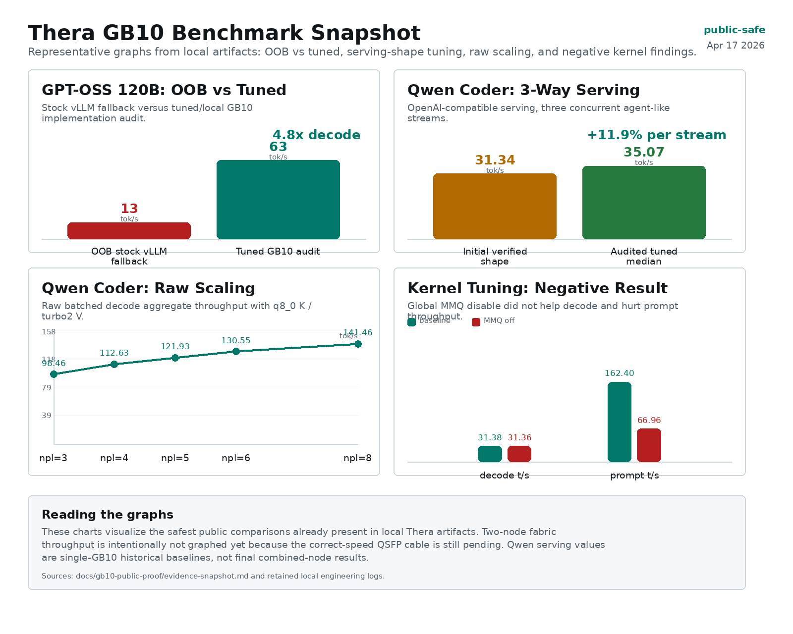

Short version
I have two GB10-class machines online, model assets staged, a private fabric plan in place, and real single-node numbers on disk. The useful next step is not another short demo prompt. The useful next step is a controlled two-node service run under long-context coding pressure, followed by a three-node ring once a third GB10 is available.
The posts that get attention in the local AI and infrastructure world usually do four things well: they show the hardware class, explain the exact networking shape, publish numbers, and admit what broke. That is the format I am using here.

Why I Set It Up This Way
The goal is local inference for long-running coding and infrastructure agents. I care about three things at the same time: maximum coding intelligence, fast enough inference to keep agents moving, and enough context that subagents can work without immediately collapsing the task into a toy prompt.
I kept management and fabric separate from the beginning. The normal LAN stays for SSH, updates, RDP-adjacent administration, package sync, and recovery. The high-speed link is treated as a private point-to-point fabric. That keeps a bad fabric experiment from taking basic management with it.
The Baseline Hardware Shape
The public labels are C-1 and C-2. Both are ASUS GX10 / NVIDIA GB10-class systems with ConnectX-7-class high-speed networking. I am not publishing private addressing or serial-level details; the useful part for reviewers is the hardware class, runtime shape, and measured behavior.
| Layer | Current setup | Why it matters |
|---|---|---|
| Management | Normal LAN, SSH/admin path preserved | Recovery remains boring even while fabric work changes. |
| Fabric | Direct QSFP/CX7-style link, isolated from LAN | Model traffic can be measured without moving the default gateway. |
| Model assets | Qwen3.5-397B IQ3 and MiniMax M2.7 IQ4 on disk | Both candidates fit for side-by-side testing. |
| Serving target | 8 slots sharing a 4M-token context pool | This matches the agent/subagent workload I actually care about. |
First Checks I Ran On Each Node
I started with the boring checks because they catch expensive mistakes early: wrong interface, wrong link mode, missing driver, unexpected MTU behavior, or a service accidentally binding to the wrong network.
lspci | grep -Ei 'mellanox|nvidia|connectx|ethernet|infiniband'
ip -br link
sudo ethtool -i <fabric_iface>
sudo ethtool <fabric_iface>
# If Mellanox/NVIDIA tools are installed:
sudo mst status
sudo mlxconfig -d <device> q | grep -Ei 'LINK_TYPE|SRIOV|ROCE'I kept the fabric in Ethernet mode for the first pass. InfiniBand and RDMA can come later, but plain IP has to be boring before I trust anything above it.
The Fabric Config Shape
The fabric network is a small private point-to-point subnet with no gateway. I am using placeholders below because the exact private addressing is not the point. The important part is the shape: one interface, one private fabric address per node, no default route, jumbo MTU only after validation.
# C-1
sudo nmcli con add type ethernet ifname <fabric_iface> \
con-name gb10-fabric-c2 \
ipv4.method manual \
ipv4.addresses <c1_fabric_ip>/30 \
ipv6.method disabled
sudo nmcli con mod gb10-fabric-c2 802-3-ethernet.mtu 9000
sudo nmcli con up gb10-fabric-c2
# C-2
sudo nmcli con add type ethernet ifname <fabric_iface> \
con-name gb10-fabric-c1 \
ipv4.method manual \
ipv4.addresses <c2_fabric_ip>/30 \
ipv6.method disabled
sudo nmcli con mod gb10-fabric-c1 802-3-ethernet.mtu 9000
sudo nmcli con up gb10-fabric-c1I do not want the temporary cable to define the final setup. The current temporary cable is useful for functional bring-up, but the link should negotiate normally when the correct cable lands. Hard-coding the link to today's temporary limit would be the wrong lesson to bake into the configuration.
# Forward and reverse tests after the correct-speed cable is installed:
iperf3 -s -B <c1_fabric_ip>
iperf3 -c <c1_fabric_ip> -P 8 -t 30
iperf3 -c <c1_fabric_ip> -P 8 -t 30 -R
# If MTU 9000 is enabled:
ping -M do -s 8972 -c 3 <peer_fabric_ip>
# Counter check before and after load:
sudo ethtool -S <fabric_iface> | grep -Ei 'err|drop|fec|crc|timeout|pause'The Model-Serving Target
The model question is not "what is the biggest file I can barely load." The question is which single model gives the best coding intelligence at usable speed while preserving enough memory for KV cache, compute, and the operating systems.
My current target shape is Qwen3.5-397B IQ3 across the two GB10 nodes with eight slots sharing a four-million-token context pool. MiniMax M2.7 IQ4 is staged as a smaller challenger. GLM is still the model family I am watching hardest for long-running agent behavior, but I am not going to call a winner until the candidates run the same real coding tasks.
# Representative serving shape, not a universal launch command:
model: Qwen3.5-397B-A17B-UD-IQ3_S
slots: 8
context_pool: 4M tokens
kv_profile_observed: K=q8_0, V=turbo2
reserve: keep OS/service headroom on both nodes
test_load: real repos, multi-file edits, tests, failures recordedNumbers I Can Publish Right Now
The strongest numbers today are still single-GB10 baselines and kernel/runtime tuning results. I am keeping the two-node fabric claims separate until the correct cable and repeated service benchmarks are finished.
| Measurement | Recorded value | Takeaway |
|---|---|---|
| GPT-OSS 120B tuned decode | 63 tok/s batch-1 decode | One GB10-class system can run a useful 120B lane. |
| GPT-OSS AIME25 local eval | 0.925 over 240 samples | There is functional eval data, not just throughput. |
| Qwen Coder raw sweep | 141.46 tok/s aggregate at npl=8 | The backend has headroom before service overhead. |
| MMQ-off experiment | Prompt throughput regressed from 162.40 to 66.96 tok/s | The easy toggle was not the real optimization path. |

What Broke Or Almost Broke
- The cable mattered more than expected. A lower-rated cable is fine for setup, but it is not the basis for a real fabric claim.
- The easy kernel toggles did not solve the bottleneck. MMQ-off stayed flat on decode and hurt prompt throughput; disabling stream-k globally was worse.
- Benchmarks that look good in isolation are not enough. The real test is long-context coding with multiple agent slots under the same launch configuration.
- Model quality claims are fragile unless the same tasks run across Qwen, MiniMax, and GLM with the same scoring rules.
What I Would Repeat
- Name the nodes and document roles first.
- Keep LAN management separate from the high-speed fabric.
- Prove IP networking before RDMA or distributed runtime tuning.
- Record negative results, because they prevent the next person from wasting the same night.
- Publish the benchmark data as CSV/JSON, not only as screenshots.
Why A Third Node Changes The Work
With two nodes, the fabric test is point-to-point. With three, the topology becomes a small ring, which is exactly the shape NVIDIA documents for three Spark-class systems using direct QSFP connections. That matters because the third node is not just "more memory." It changes what can be tested: ring behavior, routing choices, service placement, failure behavior, and whether long-running agent traffic remains usable under load.
A fourth node would open Q3/Q4 tradeoff testing and redundancy experiments, but the first meaningful jump is two to three. That is why the sponsorship request starts with one permanent GB10-class node plus the right fabric cable.
The Next Concrete Test
The next pass is narrow and measurable:
- Install the correct-speed fabric cable.
- Record negotiated link speed, MTU, and counters.
- Run forward and reverse iperf3.
- Start the combined model service with the recorded launch shape.
- Run real long-context coding tasks across Qwen and MiniMax, then GLM if fit and runtime shape validate cleanly.
- Score correctness, completion behavior, queue behavior, time-to-first-token, decode throughput, memory pressure, and failures.
What This Is Really Testing
I am not trying to make a tiny local cluster win a synthetic chart for one prompt. I am testing whether local GB10 systems can support the work commercial agents often fail at: staying on a task, using long context, running tools, editing real repositories, absorbing test failures, and finishing without stubs.
Permanent Hardware Request
The first two systems are privately funded. The useful next contribution is one permanent GB10-class node plus the correct fabric cable. The preferred contribution is two permanent nodes plus a compatible QSFP switch or fabric kit.
References I Used
The setup shape is grounded in NVIDIA's Spark clustering docs and current GB10 software notes. The writing format is shaped by what the local LLM community tends to ask for: exact setup, memory footprint, usage pattern, tool/framework details, and honest caveats.